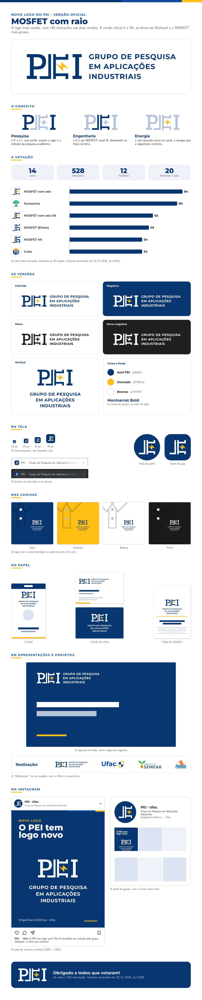

VOTAÇÃO ENCERRADA
Resultado da votação do novo logo do PEI
Em cada etapa, a pessoa podia marcar mais de uma finalista; a barra soma todas as marcações das 20 etapas. Obrigado a todos que votaram!

O LOGO OFICIAL
MOSFET com raio
O logo mais votado, com 146 marcações nas duas versões. A versão oficial é a Alt: as letras em Rockwell e o MOSFET mais grosso.


